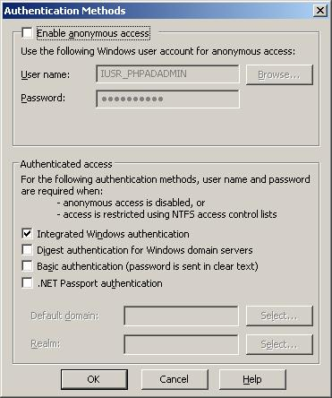

|
| Installation for V0.321 |
Step 1 - Install PHP
- Download from http://www.php.net/downloads.php
- Unzip php directory to root of your C: drive
- from the PHP directory copy the php.ini-reccommended to C:\windows direcotry and rename it to php.ini
- Uncomment the windows include path under "Paths and Direcotries" ( Line 515 on current build )
include_path = ".;c:\php\includes"
- set cgi.force_redirect to 1 this is done by uncommenting the existing line ( Line 540 on current build )
cgi.force_redirect = 1
- Enable the PHP Ldap module this is done by uncommenting the extension under the "Windows Extensions" ( Line 650 on current build)
extension=php_ldap.dll
- Add the PHP directory to the windows path
- right click My Computer on the server
- Click the Advanced tab
- Select PATH from the system variables section
- Click Edit and add:
C:\php;
- note: this last point requires a server reboot which will be done in the next step.
|
Step 2 - Configure IIS to use PHP
- Assumption here
- IIS6
- You are going to install php-AD-admin in the default website ( C:\inetpub\wwwroot\ )
- the php directory in the root of you C: Drive i.e. C:\php
- Open Internet INformation Services (IIS) Manager
- Expand the Web Service Extensions
- Right click Web Service Extensions
- Select Add a new Web Service extension
- The new web service Extension window will appear
- in Extension name enter PHP
- In required files click add
- then add the following path
C:\php\php5isapi.dll- click ok
- check the box marked Set extension status to allowed
Expand the Default Web Site folder
- Right click the Default Web Site
- Select Properties
- Select the Documents Tab
- Click Add
- Under Default content page: add index.php
- click ok
- Select the Home Directory Tab
- Under Application settings Set Execute Permissions to Scripts Only
- Under Application settings select configuration
- Click Add
- Next to Executable enter the following Path:
C:\php\php5isapi.dll- Next to extension enter .php
- Click ok
- Click ok
- Select the Directory Security
- Under Authentication and access control
- Select Edit
- make sure the only option selected is Integrated Windows authenication
- Click ok
- Click ok

|
Step 3 - Install php-AD-admin
- Download php-AD-admin from sourceforge
- Unzip the compressed package in to
- C:\Inetpub\wwwroot
- Open the phpadadmin class in a text editor
- edit the $domainconfig to be as per you settings
To configure php-AD-admin to connect to your domain you need the following information:
- netbios name of your domain
- this can be found by logging to a PC and in the command prompt typing the following command
echo %userdomain%
- the netbios domain name should be in upper case
- in the example below the netbios name has been set to DOMAIN
- The full qualified domain name ( fqdn )
- this can be found by logging to a PC and in the command prompt typing the following command
echo %userdnsdomain%
- the fqdn should be entered in lower case
- in the example below the fqdn has been set to domain.com
- A suitable user with read access to active directory
- This user does not have to be a member of any administrative groups (just domain users is fine)
- in the example below the readuser has been set to readusername
- The password for the account above (note: if you havnt set the account pasword to never expire you may be changing this on a regular basis)
- in the example below the readusepassword has been set to password
- A suitable user with write access to active directory
- This is a user that will need to have rights to be able to create, edit and delete accounts in this domain. Typically this could be any user in the domain admins group (though not nessecarily)
- in the example below the readuser has been set to readusername
- The password for the account above (note: if you havnt set the account pasword to never expire you may be changing this on a regular basis)
- in the example below the readusepassword has been set to password
Single Domain Example
var $domainconfig=array("DOMAIN"=>array ( "fqdn"=>"domain.com",
"readuser" => "readusername",
"readuserpassword" => "password",
"writeuser" => "writeuser",
"writeuserpassword" => "password",
),);
| 2 Domain Example |
var $domainconfig=array("DOMAIN"=>array ( "fqdn"=>"domain.com",
"readuser" => "readuser",
"readuserpassword" => "password",
"writeuser" => "writeuser",
"writeuserpassword" => "password",
),
DOMAIN2"=>array ( "fqdn"=>"domain2.com",
"readuser" => "readuser",
"readuserpassword" => "password",
"writeuser" => "writeuser",
"writeuserpassword" => "password",
),); |
| 4 Domain Example |
var $domainconfig=array("DOMAIN"=>array ( "fqdn"=>"domain.com",
"readuser" => "readuser",
"readuserpassword" => "password",
"writeuser" => "writeuser",
"writeuserpassword" => "password",
),
DOMAIN2"=>array ( "fqdn"=>"domain2.com",
"readuser" => "readuser",
"readuserpassword" => "password",
"writeuser" => "writeuser",
"writeuserpassword" => "password",
),
DOMAIN3"=>array ( "fqdn"=>"domain3.com",
"readuser" => "readuser",
"readuserpassword" => "password",
"writeuser" => "writeuser",
"writeuserpassword" => "password",
),
DOMAIN4"=>array ( "fqdn"=>"domain4.com",
"readuser" => "readuser",
"readuserpassword" => "password",
"writeuser" => "writeuser",
"writeuserpassword" => "password",
),); |
|
The Config.csv located in the config directory is used to enable and disable features and select which fields you wish to enable your user to be able to edit.
The user edit lines allow you to add an active directory atribute to the my Network settings page for a user to be able edit, or just view them.
The order in which the fields are displayed is the same order that they appear in the CSV file.
The User Edit lines have 9 feilds
| Field No. |
Field Name |
Description |
usage |
1 |
Function Type |
Used to identify what you configurting |
User Edit |
2 |
Freindly Name |
Name to display to the user |
Any name (no commas) |
3 |
ID |
internal unique ID |
Any name (no spaces,no commas) |
4 |
Editable |
make field editable |
Editable = TRUE
Read only = FALSE
|
5 |
not used yet |
Reserved for future use |
|
6 |
not used yet |
Reserved for future use |
|
7 |
Enable |
Enable the field (disabling will not display the field) |
Enabled = TRUE
Disabled = FALSE
|
8 |
AD atribute |
the AD attribute you want to show or edit |
e.g.
lastname = sn
firsname = givenname
job title = title
etc.
note: must be all in lowercase
|
9 |
Form Type |
If Editable is set to TRUE, then how to display the field. Either as a free text form box or as a dropdown list |
Text field = text
Dropdown = dropdown
|
So an example entry for a to allow a User to be able to edit their ad description in a text field would be :
User Edit,Description,description,TRUE,,,TRUE,description,text
Adding a field to the User Edit section of the config.csv and giving that field a form type of dropdown allows you to specify a list of predetermined entries for the attribute you have specified.
In this example we will added a drop down list for the field department:
Assuming the line doesn’t already exist we add a line to the config.csv
User Edit,Department,description,TRUE,,,TRUE,department,dropdown
This will get php-AD-admin to get a list of entries from a csv file in the config/dropdowns directory with the same name as the Active Directory Attribute (i.e. in this case department.csv). The contents of the file should have one entry on each line and contain no commas.
E.g. to add the entries accounts, personnel, IT and human resources to a drop down list the file would look like this :
Accounts
Personnel
Information Technology
Human Resources
note: Dropdown lists are currently sorted in alphabetical order automatically
Functions allows you to disable and enable the other functions, all of which are work in progress, My Network Details is currently the only sections working fully. Though My Groups will display a list of the groups a use is currently a member of, though this is currently not especially helpful.
System is currently only used to specify which group can view the configuration pages.
The configuration pages are currently work in progress, ( as I broke it when recoding the dropdowns etc J )
|
|
|